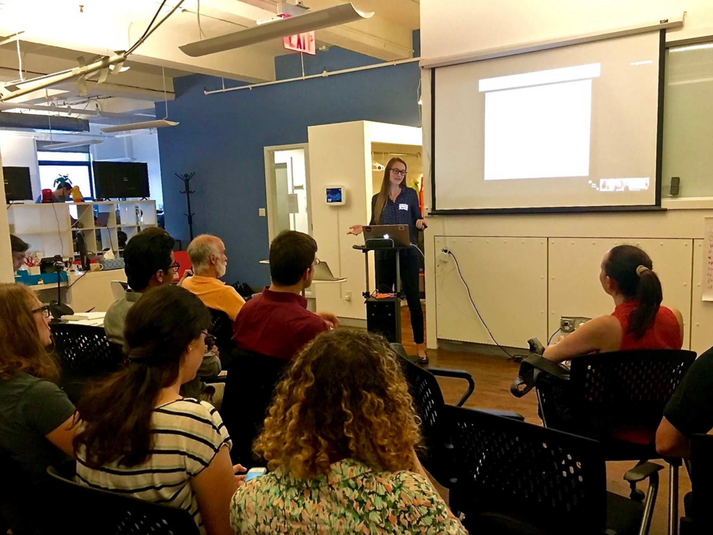
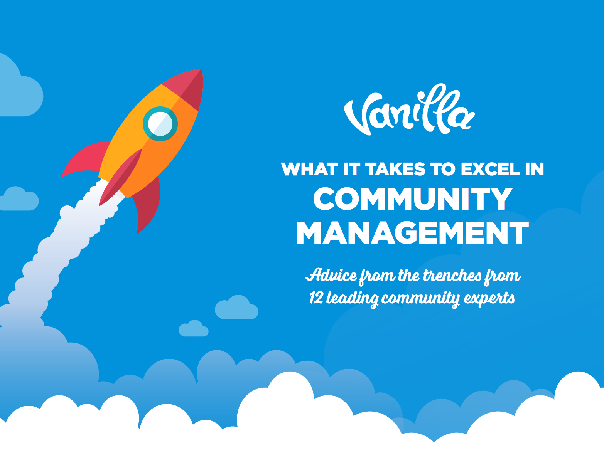

Toggle navigation
Alexandra Bowen
Home
About
Experience
Experience
Talks and Writing
Contact
Talks, Events and Writing

Talks and Events
Conferences
Alterconf,
How to deal with intellectual trolling
NYC, December 2016
Organizer and Planner: Putting Grasslands to Work, Savory Institute Conference. (500+ attendees) London, September 2014
Online events
#CMGR Hangout,
Mapping Community Journeys,
August 2016
Vanilla Forums Webinar,
How to excel in community management,
July 2016
Meetups
DreamFactory and Clarifai API Meetup,
NYC, July 2016
Codecademy Hour of Code,
NYC, December 2015
SketchUp to CNC Meetup at TinkerMill,
Boulder, August 2015
SketchUp's first ever Meetup,
Boulder, May 2015

Writing
Published
People will surprise you, and you should let them. 8 lessons from the Director of Community Laura Small.
CMX Blog, August 2016
How to become a great Online Community Manager [Infographic]
HubSpot Blog, June 2016
Community Moderating Tips This Pro Wants You To Know.
Vanilla Forums Blog, June 2016
What's special about Developer Communities.
Developer Relations Club, June 2016
Community Managers Career Advice project.
Vanilla Forums, May 2016
Rethinking Unemployment: How a network of Europe's social entrepreneurs is rethinking ways to get the long-term unemployed back into work.
Thomas Reuters, May 2016
Click to view my freelance writing profile and articles.
Inhabitat, 2012
Personal/Blog
The principles of a flourishing community from urban planning.
Medium, July 2016
Customizing a Discourse forum for non coders and designers.
Medium, June 2016
Design your Community like you would a Kitchen.
LinkedIn, February 2016
I kicked my shopping habit to the curb, for an entire year.
LinkedIn, January 2016
Managing an Online Community Forum: A short guide.
LinkedIn, January 2016
How to deal with intellectual bullies in online communities.
LinkedIn, January 2016
Work
Supporting Open Source and making friends at OSCON.
DreamFactory Blog, May 2016
Reducing complexity with serverless API architecture.
DreamFactory Blog, May 2016
SketchUp Skill Builder [Video]: How to Install an Extension.
SketchUp YouTube, April 2015
SketchUp Pro for visualization and logistics at sea ports: a conversation with SEA-Tech
SketchUpdate Blog, August 2015
Using SketchUp (and Unity) to craft stunning game environments.
SketchUpdate Blog, June 2015
Celebrating Maker Faire Bay Area's 10th anniversary.
SketchUpdate Blog, May 2015
Tiny House, Big Movement.
SketchUpdate Blog, April 2015
3D Warehouse Comments are back!
SketchUpdate Blog for 3D Warehouse, March 2015
New 3D Warehouse User Profiles - Because YOU matter most.
SketchUpdate Blog for 3D Warehouse, March 2015
Contact
Please send me an email: alexandra.anna.bowen@gmail.com or find me on Twitter!